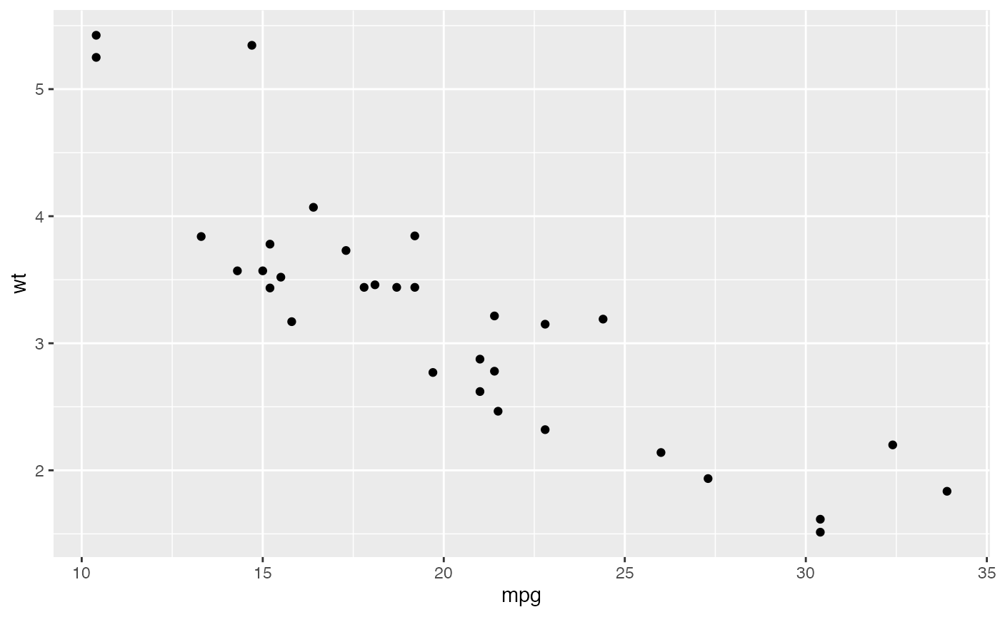
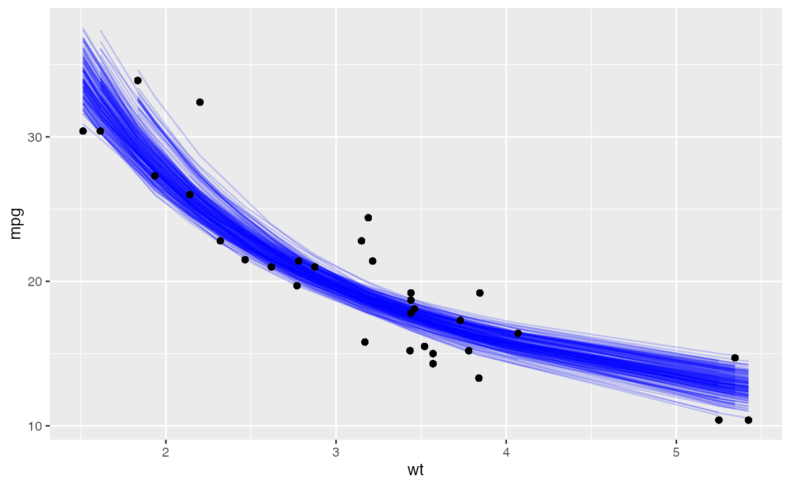

broom.RmdBroom helps creating tidier statistical methods. The three main functions around broom to interact with tidy models are:
| Function | Action |
|---|---|
|
|
|
|
|
|
library(tidymodels)
#> ── Attaching packages ───────────────────────────────── tidymodels 0.1.2.9000 ──
#> ✓ broom 0.7.5 ✓ recipes 0.1.15
#> ✓ dials 0.0.9 ✓ rsample 0.0.9
#> ✓ dplyr 1.0.4 ✓ tibble 3.0.6
#> ✓ ggplot2 3.3.3 ✓ tidyr 1.1.2
#> ✓ infer 0.5.4 ✓ tune 0.1.2
#> ✓ modeldata 0.1.0 ✓ workflows 0.2.1
#> ✓ parsnip 0.1.5 ✓ yardstick 0.0.7
#> ✓ purrr 0.3.4
#> ── Conflicts ───────────────────────────────────────── tidymodels_conflicts() ──
#> x purrr::discard() masks scales::discard()
#> x dplyr::filter() masks stats::filter()
#> x dplyr::lag() masks stats::lag()
#> x recipes::step() masks stats::step()
ggplot(mtcars, aes(mpg, wt)) +
geom_point()
Let’s say we want to fit a nonlinear model to the weight/mileage relationship in the mtcars data set. We can use the nls function to determine the nonlinear (weighted) least-squares estimates of the nonlinear model.
nlsfit <- nls(formula=mpg ~ k / wt + b, data= mtcars, start = list(k = 1, b = 0))
summary(nlsfit)As we can see this is a non-tidy output.
We can generate 2000 bootstrap samples replicates of the data using bootstraps for sampling with replacement.
set.seed(27)
boots <- bootstraps(mtcars, times = 2000, apparent = TRUE)
fit_nls_on_bootstrap <- function(split) {
nls(mpg ~ k / wt + b, analysis(split), start = list(k = 1, b = 0))
}Now, we can map this function to the bootstraps and map tidy, glance and augment to get a tidy coefficients information.
regressions <- boots %>%
mutate(model = map(splits, fit_nls_on_bootstrap),
tidied = map(model, tidy),
glanced = map(model, glance),
augmented = map(model, augment)
)If we inspect regressions we can see that tidied, glanced and augmented column contain nested lists with 5, 4 and 9 variables each respectively.
regressions
#> # Bootstrap sampling with apparent sample
#> # A tibble: 2,001 x 6
#> splits id model tidied glanced augmented
#> <list> <chr> <list> <list> <list> <list>
#> 1 <split [32/1… Bootstrap00… <nls> <tibble [2 ×… <tibble [1 ×… <tibble [32 × …
#> 2 <split [32/1… Bootstrap00… <nls> <tibble [2 ×… <tibble [1 ×… <tibble [32 × …
#> 3 <split [32/1… Bootstrap00… <nls> <tibble [2 ×… <tibble [1 ×… <tibble [32 × …
#> 4 <split [32/1… Bootstrap00… <nls> <tibble [2 ×… <tibble [1 ×… <tibble [32 × …
#> 5 <split [32/9… Bootstrap00… <nls> <tibble [2 ×… <tibble [1 ×… <tibble [32 × …
#> 6 <split [32/1… Bootstrap00… <nls> <tibble [2 ×… <tibble [1 ×… <tibble [32 × …
#> 7 <split [32/1… Bootstrap00… <nls> <tibble [2 ×… <tibble [1 ×… <tibble [32 × …
#> 8 <split [32/1… Bootstrap00… <nls> <tibble [2 ×… <tibble [1 ×… <tibble [32 × …
#> 9 <split [32/1… Bootstrap00… <nls> <tibble [2 ×… <tibble [1 ×… <tibble [32 × …
#> 10 <split [32/1… Bootstrap00… <nls> <tibble [2 ×… <tibble [1 ×… <tibble [32 × …
#> # … with 1,991 more rowsWe can select 200 random bootstrap and unnest augment() to visualize the uncertainty in the fitted curve.
regressions %>%
sample_n(200) %>%
unnest(augmented) %>%
ggplot( aes(wt, mpg)) +
geom_line(aes(y = .fitted, group = id), alpha = .2, col = "blue") +
geom_point()
You can contribute to implementing additional tidying methods. Check out available tidy methods and the principles to implement them here
For more additional explanations of how to interpret output of linear regression model check dsbox.
This article is inspired by the bootstrap article on broom pkgdown. I modified nested lists, because it helps keeping my mental model tidier .